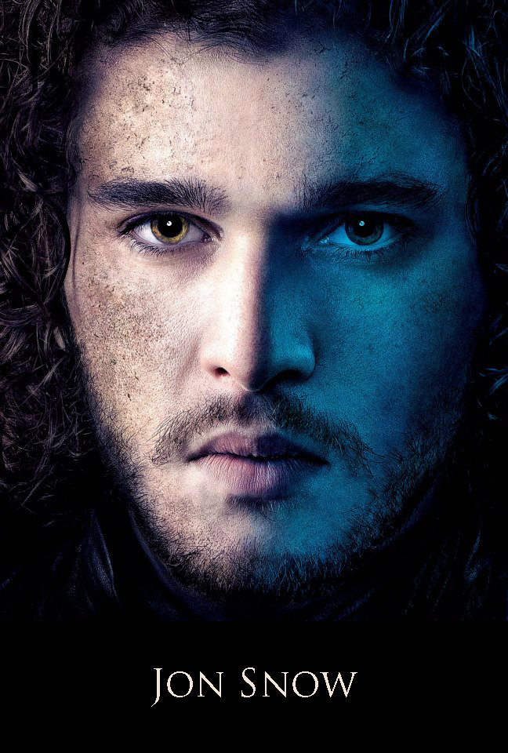

|

|
Jon Snow
Jon Snow is the bastard son of Eddard Stark, by a mother whose identity is a source of speculation.[1][2] He was raised by his father alongside his true-born half-siblings, but joins the Night's Watch when he nears adulthood. He is constantly accompanied by his albino direwolf Ghost. At the beginning of A Game of Thrones, Jon is fourteen years old. He is one of the major POV characters in the books.
Appearance and Personality
Even at age fourteen, Jon is said to have more Stark-like features than any of his siblings. He has a lean build and a long face, with dark brown hair and grey eyes that border on black. He is strong and fast. After joining the Night's Watch, he dresses in their official black garb.
Jon was raised as a Stark and Northerner and in many ways took to their values of honor, to which he tries to conform even when faced with complex and morally ambiguous decisions.
There is no description of a personal coat of arms in the books, but George R.R. Martin told the company Valyrian Steel, who made replicas of Jon's sword, to use the reversed Stark colors on the plaque that goes with the sword.
History
Jon Snow's parentage remains a mystery (see theories below). He is believed to have been born towards the end of Robert's Rebellion, within one month, give or take, of the Sack of King's Landing. Returning from the war, Lord Eddard Stark brought the new born babe to Winterfell, insisting on raising him with the rest of his family.
Jon has an older half-brother, Robb, two younger half-sisters, Sansa and Arya, and two younger half-brothers, Bran and Rickon. His presence at Winterfell turned out to be a source of friction between Eddard and his wife, Catelyn, who saw Jon as a constant reminder of her husband's infidelity. She treated him coldly making him feel unwelcome. His appearance, resembling Eddard more closely than any of his true born siblings, strained the relationship between himself and Catelyn further. However, Eddard always treated Jon the same as his trueborn children and Jon got on well with his half-siblings, particularly with Robb and Arya. Still, Jon always had issues with his bastardy and at time felt alienated, contributing to his eventual decision to join the Night's Watch, where the circumstances of his birth would be of little importance.
|